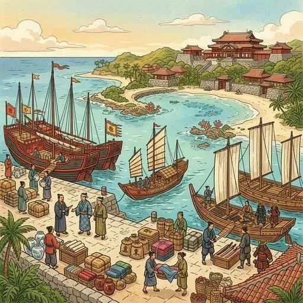
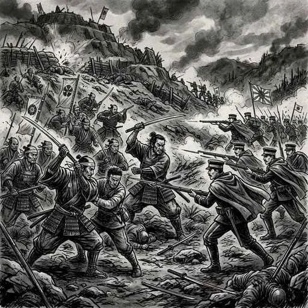

23. 近代外交の始まりと自由民権運動
明治新政府は、国内の改革を進める一方で、近隣諸国との近代的な国境や外交関係を確立していきました。しかし、急激な改革への不満から、武士（士族）たちの反乱が相次ぎ、さらに「国民に政治の権利を」と求める言論の戦いも始まります。今回は、明治初期の「外交・国境の確定」と「自由民権運動（じゆうみんけんうんどう）」の歩みを分かりやすく解説します！
1. 近代外交の樹立と領土の画定
新政府は、欧米列強に「独立国」として認められるため、まずは東アジア諸国との国境や近代的な外交関係を急いで整えました。
① 近隣諸国との関係（対等と不平等）
- 日清修好条規（1871年）：清（中国）との間で結んだ条約。双方が同じ権利を持つ対等な条約でした。
- 日朝修好条規（1876年）：朝鮮（李氏朝鮮）に開国を求めて結んだ条約。かつて日本が欧米に結ばされたのと同様に、日本側に領事裁判権を認めさせ、朝鮮の関税自主権を奪った不平等条約でした（江華島事件がきっかけ）。
② 日本の国境と領土の画定
- 樺太・千島交換条約（1875年）：ロシアとの間で国境を決め、樺太（サハリン）をロシア領に、千島列島を日本領としました。
- 琉球処分（1879年）：新政府は軍隊を派遣して琉球藩を廃止し、沖縄県を設置して日本領へ編入しました。清（中国）の反対を押し切って行われました。
- 小笠原諸島の日本領としての確定（1876年）

図1：軍事力を背景に琉球藩を廃止し、沖縄県を設置した「琉球処分」のイメージ
2. 征韓論（せいかんろん）と自由民権運動の始まり
新政府内では、武力を用いてでも朝鮮を開国させようとする征韓論（せいかんろん）が高まりました。しかし、岩倉使節団として欧米を見て帰ってきた大久保利通らは「今は国内の改革（内治）が先だ」と主張し、征韓論を退けました（明治六年の政変）。
この結果、征韓論を唱えていた西郷隆盛や板垣退助らは政府を去ることになりました。
① 民撰議院設立の建白書（1874年）
政府を去った高知県出身の板垣退助（いたがきたいすけ）らは、1874年、国民が選んだ議員による国会（民撰議院）をつくることを求める『民撰議院設立の建白書』を政府に提出しました。
彼らは、薩摩藩や長州藩の出身者だけで政治を独占している政府（藩閥政治／有司専制）を強く批判し、「天下の公論」によって政治を行うべきだと主張しました。ここから、憲法制定や国会開設を求める自由民権運動が始まりました。
3. 武力による抵抗の終わり（西南戦争）
一方、身分の特権を奪われた全国の士族（元武士）たちの不満は、武力による反乱となって爆発しました。
① 西南戦争（1877年）
1877年、鹿児島で、政府を去って故郷に戻っていた西郷隆盛（さいごうたかもり）をリーダーに担ぎ、士族たちが最大かつ最後の武力蜂起を起こしました。これが西南戦争（せいなんせんそう）です。
激しい戦いの末、新政府軍は地租改正で得た安定した資金と、徴兵令で集めた平民（百姓など）の兵による近代軍事力を用いて、最強とされた薩摩士族軍を破りました。西郷隆盛は自害し、反乱は鎮圧されました。
※西南戦争の敗北により、「もはや武力で政府を倒すことは不可能である」ことが証明されました。士族や民衆のエネルギーは、武力闘争から「言論による戦い（自由民権運動）」へと完全にシフトし、運動は全国に一気に拡大しました。

図2：元武士たちの最後の意地と、平民による近代軍が激突した「西南戦争」のイメージ
4. 国会の約束と「２大政党」の結成
自由民権運動が全国でさらに高まり、政府の役人が機密情報を暴露した「開拓使官有物払い下げ事件」などで世論の政府批判が沸騰すると、政府は1881年、ついに「10年後に国会を開設する」ことを約束しました（国会開設の勅諭）。
国会の開設に備え、民権派は日本で最初の近代的な「政党」を結成しました。テストでは、この２つの政党と創始者のペアが非常によく狙われます！
① 自由党（じゆうとう、1881年結成）
党首は板垣退助。フランスの急進的な民主主義思想（ルソーなど）に影響を受け、主に農民や地方の地主を支持基盤として、徹底した主権在民と自由を求めました。
② 立憲改進党（りっけんかいしんとう、1882年結成）
党首は大隈重信（おおくましげのぶ）。イギリス風の穏健な議会政治（君主権と議会の調和）を目指し、都市の知識人や実業家を支持基盤としました。
🔥 この単元のテスト対策・暗記のコツ
-
★
日清修好条規と日朝修好条規の対比：
・日清修好条規（1871年）：清と結んだ「対等」な条約
・日朝修好条規（1876年）：朝鮮に結ばせた「不平等」条約（日本側に有利） -
★
自由民権運動の始まり（1874年）：
・板垣退助らが提出した『民撰議院設立の建白書』がスタート。「いやなし（1874）有司専制批判、建白書」と覚えましょう。 -
★
西南戦争（1877年）の意義（超頻出）：
・記述問題の定番：「西南戦争によって武力で政府を倒すことは不可能と証明され、反対運動は言論による国会開設運動（自由民権運動）へ移行した」 -
★
２つの政党のペア：
・自由党：板垣退助（急進的なフランス風）
・立憲改進党：大隈重信（穏健なイギリス風）